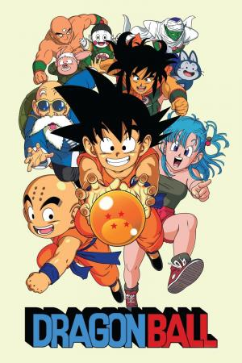
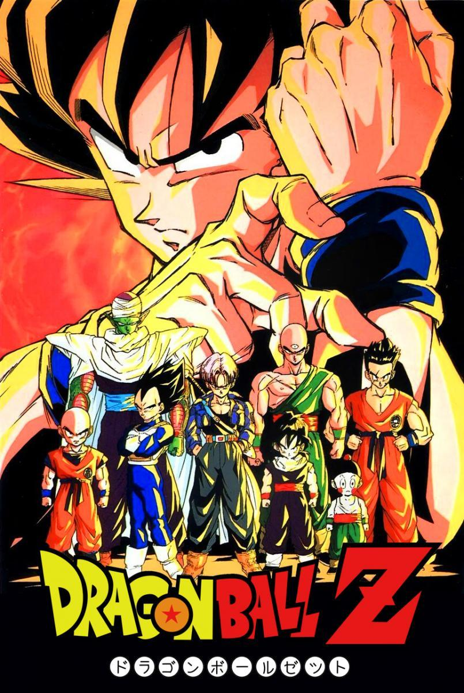
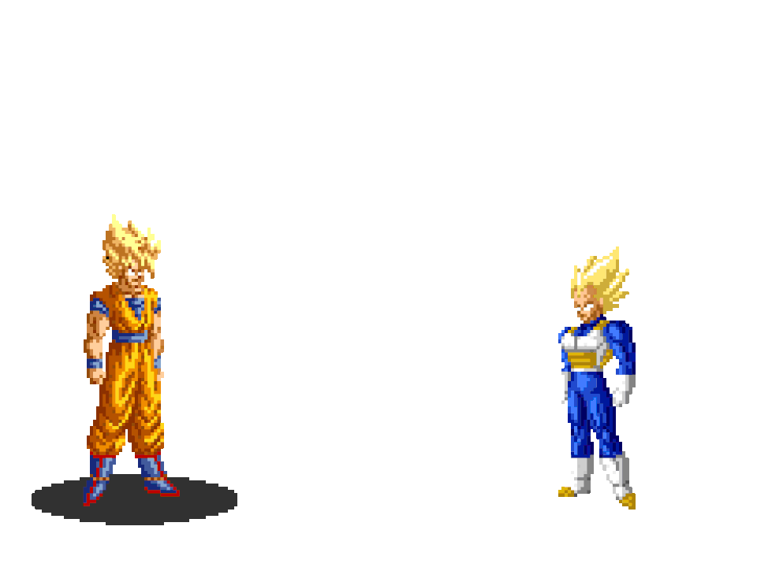

<!DOCTYPE html>
<html>

<head>
    <link rel="stylesheet" href="colores.css">
</head>

<body>

</body>

</html>
<meta charset="utf-8">
<meta name="viewport" content="width=device-width, initial-scale=1">
<title>La cámara del tiempo</title>
<link href="https://cdn.jsdelivr.net/npm/bootstrap@5.2.0/dist/css/bootstrap.min.css" rel="stylesheet"
    integrity="sha384-gH2yIJqKdNHPEq0n4Mqa/HGKIhSkIHeL5AyhkYV8i59U5AR6csBvApHHNl/vI1Bx" crossorigin="anonymous">

<body>
    <nav class="navbar navbar-expand-lg bg-dark">
        <div class="container-fluid">
            <a class="navbar-brand text-white" href="">
                

            </a>
            <button class="navbar-toggler" type="button" data-bs-toggle="collapse" data-bs-target="#navbarNav"
                aria-controls="navbarNav" aria-expanded="false" aria-label="Toggle navigation">
                <span class="navbar-toggler-icon"></span>
            </button>
            <div class="collapse navbar-collapse" id="navbarNav">
                <ul class="navbar-nav">
                    <li class="nav-item">
                        <a class="nav-link text-white" aria-current="page" href="Main.html">Inicio</a>
                    </li>
                    <li class="nav-item">
                        <a class="nav-link text-white" href="personajes.html">Personajes</a>
                    </li>
                    <li class="nav-item">
                        <a class="nav-link text-white" href="series.html">Series</a>
                    </li>
                </ul>
            </div>
        </div>
    </nav>
</body>

<div class="tamaño_p">
    <p class="center">Series</p>
</div>


<div class="card-group">
  <div class="card">
    
    <div class="card-body">
      <h5 class="card-title">Dragon ball</h5>
      <p class="card-text">Dragon ball fue la primera serie mostrandonos como un niño y sus amigos buscan las esferas del dragon.</p>
      <p class="card-text"><small class="text-muted">se creo en el año 1984 y 1995</small></p>
    </div>
  </div>
  <div class="card">
    
    <div class="card-body">
      <h5 class="card-title">Dragon ball Z</h5>
      <p class="card-text">Dragon ball Z fue la serie mas vista nos muestra las epicas batallas de goku y todos sus amigos aca fue donde los hechos mas importantes pasaron</p>
      <p class="card-text"><small class="text-muted">Aca es donde goku se vuelve un super sayayin por primera vez</small></p>
    </div>
  </div>
  <div class="card">
    
    <div class="card-body">
      <h5 class="card-title">Dragon ball super</h5>
      <p class="card-text">Dragon ball super nos muestra un goku mas poderoso peliando contra seres muy poderosos(dioses) incluso el "siendolo"</p>
      <p class="card-text"><small class="text-muted">Aca se muestra a el famoso ultra instinto</small></p>
    </div>
  </div>
</div>

<div class="center">
    
</div>